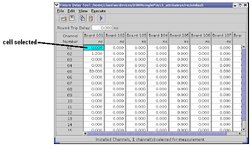

Using the edit menu to select channels for fixture delay measurement
Channels for which you want to make fixture delay measurements must first be selected. Use the following functions in the Edit menu of the Fixture Delay window to select channels. Channels that are selected are displayed in the Fixture Delay window with a blue background color in their cells as shown in the figure below. After the desired channels are selected, you can perform a fixture delay measurement as described in Using the Execute menu.
